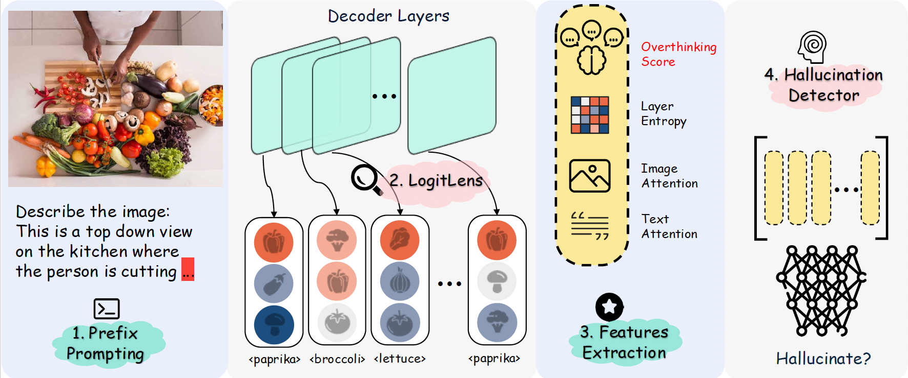

- Prefix Prompting: We use prefix prompting to obtain the next predicted token. Initially, the model is prompted with the query "Describe this image.".
- Logit Lens: We apply the logit lens technique to observe the layer-wise thought process of the VLM, tracking how object hypotheses evolve across layers.
- Feature Extraction: We extract the following features from the layer-wise thought process:
- Overthinking Score: A metric defined as the number of unique tokens emitted across the decoder layers.
- Layer-wise Entropy: A measure of the uncertainty or diversity of the VLM's object hypotheses across layers.
- Next token to Image Attention: For each layer, we measure the average attention from the next predicted token to the image features.
- Next token to Text Attention: For each layer, we measure the average attention from the next predicted token to the text features.
- Detection Model: We train the following light-weight binary classifiers using the extracted features to detect hallucinations in VLM outputs.
- Logistic Regression
- Gradient Boosting (GB)
- Multi-layer Perceptron (MLP)